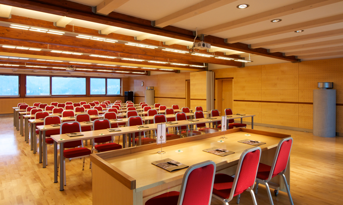

The seminar will be held at Hotel Lovec, located in the center of Bled, only 100m from the lake. The exact address is:
Best Western Premier
Hotel Lovec
Ljubljanska cesta 6
4260 Bled
Slovenia
Tel: +386 4 620 41 00
Fax: +386 4 576 86 25
Hotel Lovec's
factsheet provides a lot of details on the Seminar's venue. The conference room that will be used for the seminar's technical session features a beautiful view of the lake.

Transportation & Directions
The most convenient airport is
Ljubljana Jože Pučnik Airport (previously Brnik Airport), which is only 30 minutes away from the conference site. More information can be found at:
To reach the Seminar venue, the organizers recommend using the shuttle/taxi service GRCH d.o.o. It is possible to make reservations for transportation in advance through
their website.
- Travel overview - FYI (PDF)
Bled, Ljubljana Airport, and the city of Ljubljana are conveniently connected with each other and other European cities by route A2/E61. Approximate driving times to Bled are provided below:
- Ljubljana: 40 min.
- Venice: 2 h 45 min.
- Munich: 3 h 30 min.
- Milan: 5h
- Prague: 6h 30 min
Visas
Citizens of all European countries, as well as Australia, Canada, Israel, Japan, New Zealand and the United States do not require visas to enter Slovenia for stays of up to 90 days.
Any prospective participants who need visas to attend the meeting are kindly asked to contact the Seminar Secretary,
Vesna Nahtigal, providing the following information:
- Family name and given name
- Sex (male or female)
- Date of birth
- Nationality
- Passport number
- Professional specialty
- Occupation & title / position
- Organization/institution and department, including postal address and postcode
- Address for correspondence, including postcode
An invitation letter will be sent to individual visa applicants by e-mail.